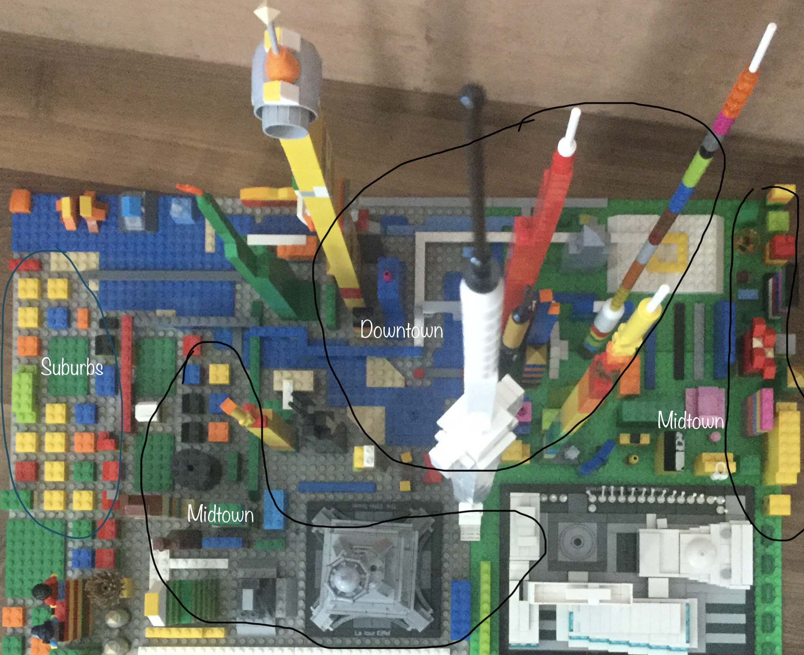
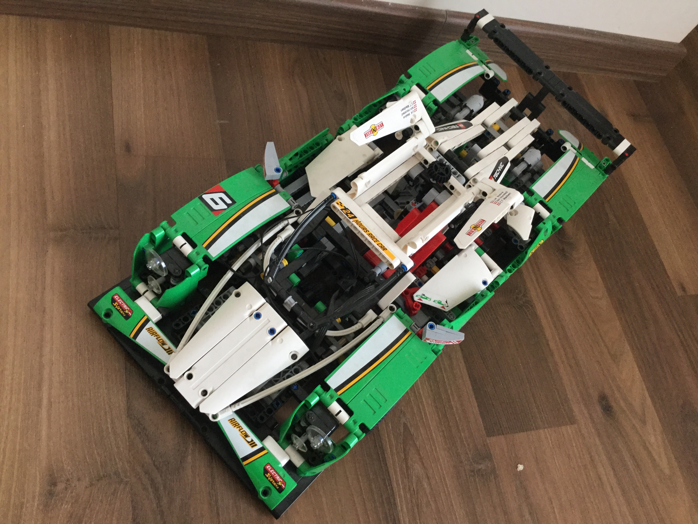
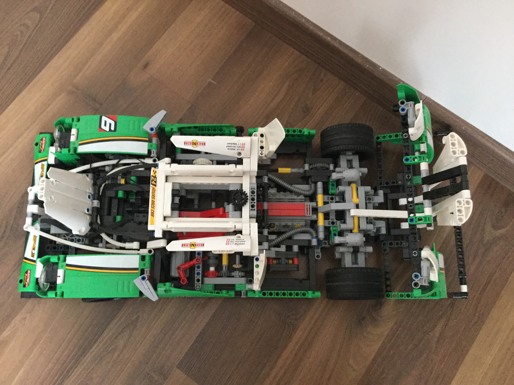
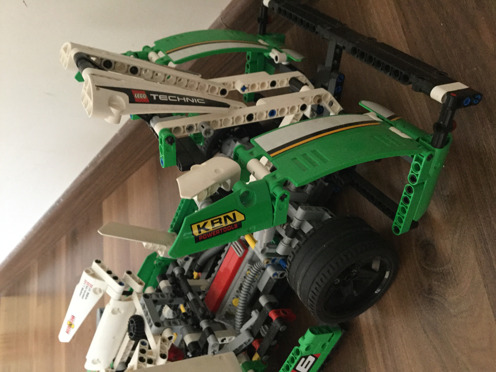
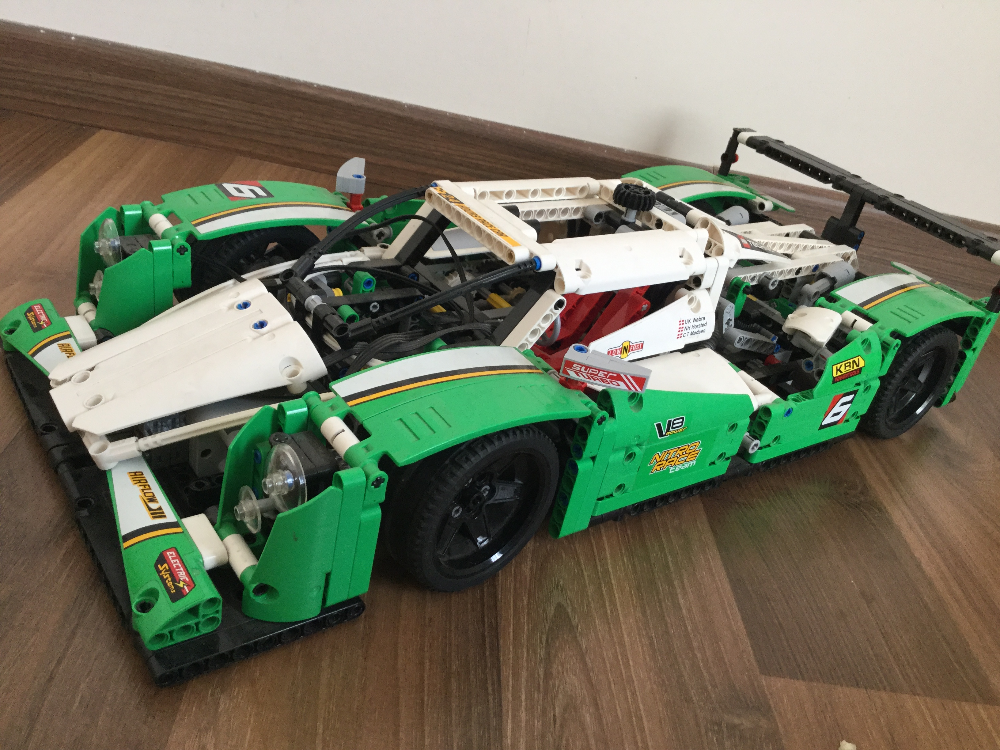
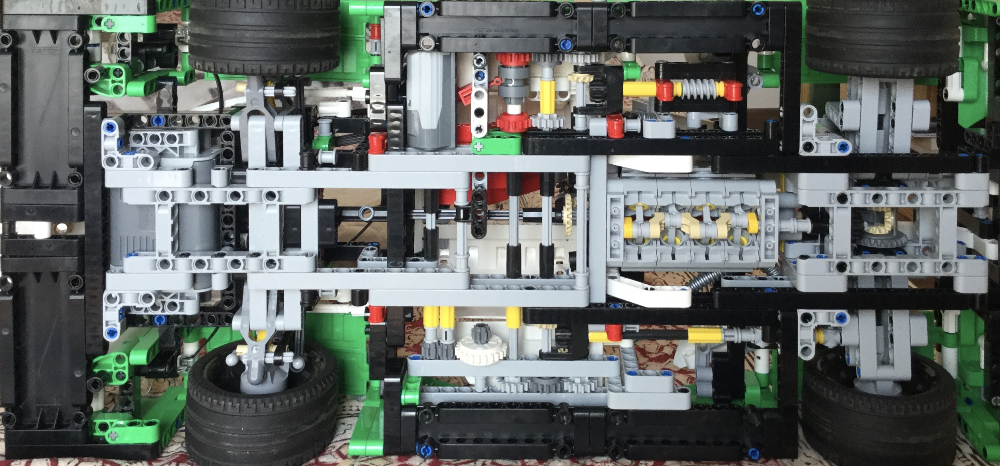
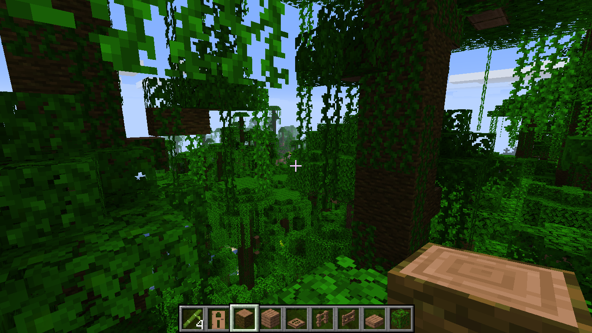

Hi! My name is Advaita. Welcome to my website. My first post on this blog is about the microscale lego city I've been working on. The city has a plan and you can see it very well in the photo. It has the suburbs at the far left, there is a midtown close to it, and where all the huge skyscrapers are is the downtown with the tallest building (the white one)at around 4 feet! The next place is on the other side of the city, with a midtown and airport, with better quality housing and offices. My favorite building is the white one, also the tallest building in the city. I also like the houses that are the river, on the top left. The yellow-orange one is a hotel, and the other one that has a glass like piece is a mansion. Some of the other buildings are either docks or tourist spots.
Hi! This is my next post on the blog. I am going to be writing about my LEGO technic set, the 24-hours race car (42039 is the set number) . It is a very cool set, it is around 2 feet long and has lots and lots of gears. The set is motorised and I can make it's doors open and I can also make the back open to reveal it's lego V8 engine (with lego pistons, too!). I like how realistic it looks. It takes a lot of time to build it, though. I took me a month to make it. But the end result was worth it. I think that the car is an amazing set to get.
 
So, the Ipad air now has mouse support! Wow! The Ipad's mouse support is pretty amazing. The mouse, though, on the Ipad looks pretty different from how a normal mouse would look on a mac. The mouse is only supported on IOS 13.4, and my Ipad air 2 supports it! Anyway, the mouse looks like a circle with a small white outline, but you can change the color (my favorite is the green outline) The coolest thing about it is that all the built-in apple productivity apps like pages, keynote and all those others are uptadated to use the mouse. When you are writing (or I should say typing), The mouse becomes a cursor but it is more like a thin oval and not like a normal cursor. It is always really thick. The mouse also changes form in safari. The mouse that is circular magnifies the button and turns into a square. I personally really like this new thing because now the Ipad is basically a computer without proper coding features except the more basic things like scratch.
Here is a research project that I have made it has been supported by my brother and teacher, Aarush Mehrotra It is about trigonometry. Read on to find out more! Click Here for the paper.
Hi! Today, on this blog, I am going to be writing about my review on minecraft java edition. I bought it this summer, and it costed ≈20$. I think that it really was worth it, because the controls are much easier than minecraft pocket edition(I used to play that) and shipwrecks are much easier to find, trading with villagers is easier, and it is much easier to see the snapshots on the pc edition.
When playing in survival, fighting mobs also becomes better, since the controls are easy. using the off-hand is also nice. So, in general, I thing that minecraft java edition is very good, and very much worth it.